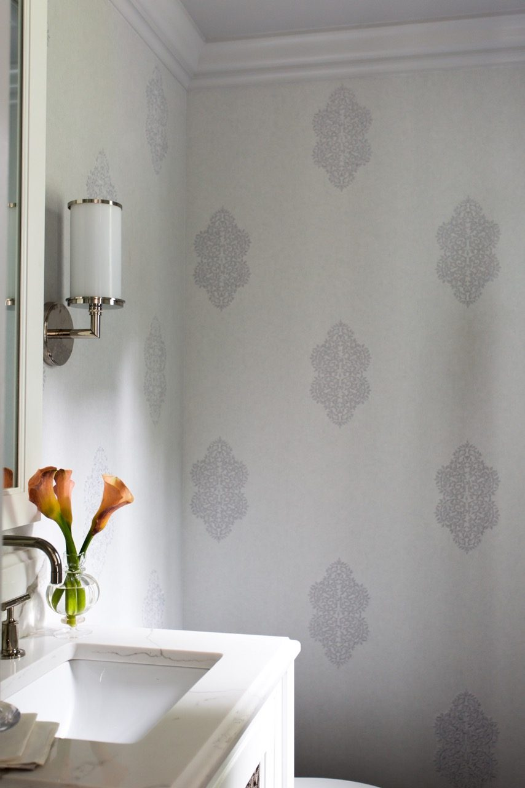
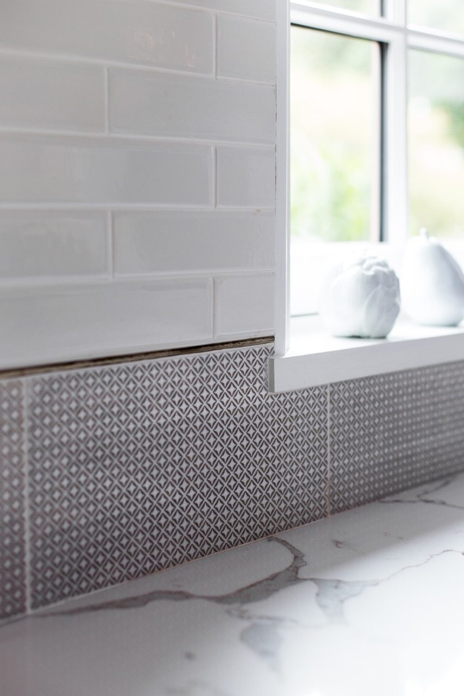
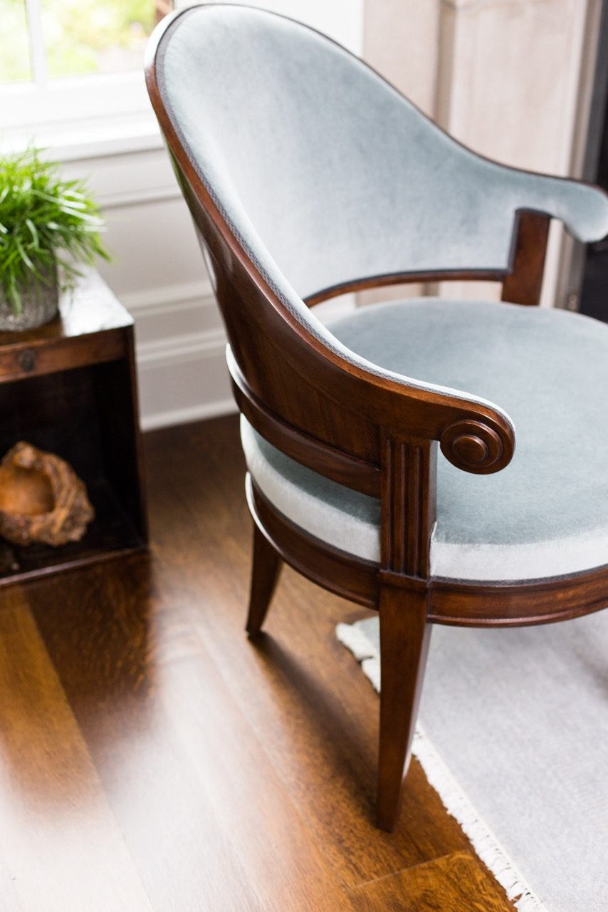
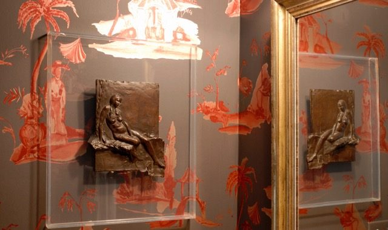
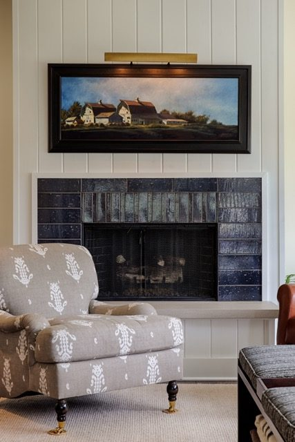

This past fall I had the privilege of participating in two prestigious Chicago art events – the annual River North Fall Gallery Walk in which I designed a pair of room vignettes to feature a local artist’s paintings – and SOFA Selects, where I had the honor to select highlights of their 25th anniversary exhibit featuring artists and galleries from around the globe. Both were thrilling and a joy to be part of – and allowed me to think more deeply about my own work in design, the role of art, and its place in interiors.
As an artist and interior designer, I believe there are two categories of art in interiors. The first is within the extensive decorative arts that are the foundation of interiors – from fabric and wallcovering, tile and lighting, to rugs and furniture. These are all art forms in their own right and follow the same basic elements of line, form, and color found in another discipline – the fine arts of painting, drawing, and sculpture. Regardless of the type and category, I consider all in the same critical way – a lamp and a bronze statue are both sculptures. One is functional and one is not, but they are both a three-dimensional art form.
In my work on design projects, I am often asked where a project begins, particularly if there is an existing art collection – does it begin with the furnishings or the art? There is no exact answer to this – interior design at all levels is a complex process. However, the idea of the design process is simplified and streamlined when all components of a project are viewed as art – when for example, the kitchen tile, lighting, and the living room furnishings are all viewed as art – each is part of a composition of which paintings, prints, sculptural objects, etc., are included – the artistic value and function of each is considered individually and then as part of the collective whole. It is here where the magic of design lies – in bringing these varying art elements together, their unique beauty becomes further enhanced.
{kind=link}

{kind=link}

{kind=link}

{kind=link}


{kind=link}

Looking beyond the aesthetics, the value of art can be found in the deeper emotional connection it creates – the unknown reasons why we are drawn to the particular “line, form, color” of something. It is when, without real thought, we love something and it requires no explanation or convincing. It is this connection that enhances our lives and brings an unspoken comfort and joy – be it in our homes, work places, restaurants we visit, or places we travel.
During this holiday season, as we gather with family and friends, take a moment to reflect on all the beautiful art forms that enrich our environments – from the décor of a holiday tree to the tableware that holds a special meal – or the comfort of settling into a cozy chair on a wintry night….and maybe consider the benefit of an added touch of “art” here and there for the coming year.
With best wishes for a joyful holiday and happy new year!
Cheers –
Robin